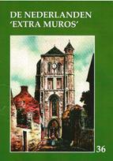

> publicaties > jaarboek 36 (2014)
Dit 36e Jaarboek De Nederlanden extra
muros biedt andermaal een keur aan bijdragen over de
territoria die deel uitmaken van ons Nederlandse kijk op de
geschiedenis van onze territoria extra muros.
Als steeds stellen wij er prijs op
het jaarboek in te leiden met de klassieke tekst waarin
uiteengezet wordt waar het de Vereniging /Stichting Zannekin uiteindelijk
om te doen is, en in welk perspectief wij ook ons jaarboek
plaatsen.
Als blikopener is er de
geopolitieke kijk van de betreurde André
Belmans, die als geen ander geijverd heeft voor
een gezamenlijke toekomst van ons territoriaal erfgoed.
Volgen de bijdragen die
van ver of nabij handelen over de Franse - die wij verkiezen als de
Zuidelijkste - Nederlanden te benoemen: ze handelen
respectievelijk over Béthune (Jan van
Tongeren), de abdij van Gizene en Waten (Cyriel Moeyaert en Antoon Lowyck), Michiel de Swaen
(Camiel van Woerkum) en het
fort van Mariembourg (Ruud Bruyns).
Volgt, bij wijze van
scharnier, de bijdragen over Hoogstraten, de historische figuur
en de plaats die zijn naam draagt (Luc
Pauwels) en andermaal een luik gewijd aan de
verwante architectuurvormen binnen de Nederlanden en de
aangrenzende gebieden (Zeno Kolks).
Met de bijdragen rond de
sabelsleper Maarten Schenk (Renaat
Vanheusden) en de theoloog Ubbo Emmius (Marten Heida) komen ook de
oostelijke Nederlanden extra muros volop aan bod.
Een apart maar evenzeer
grensoverschrijdend verhaal brengt Paul
van Hauwermeiren, dat handelt over de
kramertalen, zijnde het Bargoens van de destijds rondtrekkende
handelslieden, dat ons van West-Vlaanderen tot in het Rijnland
en nog verderop brengt.
Voorafgaand aan de
Kroniek en de boekrecensies leest u nog het summiere verhaal van
Leo Camerlynck over de
merkwaardige Zuid-Afrikaanse oorlogsgedenksite te Longueval, nu
in Picardië, doch ooit binnen de zuidelijkste Nederlanden.
Voor het eerst
verschijnt het jaarboek De
Nederlanden extra muros met de meeste illustraties in
vierkleurendruk. Een extra-investering die hopelijk tot een
bredere lezersschaar leidt!
Extra bij dit jaarboek
is ook het overzichtsregister van de vijf vorige jaarboeken, dat
deze editie iets omvangrijker dan gewoonlijk maakt. Daaruit
leren we dat onze jaarboekenreeks tot einde 2013 niet minder dan
377 bijdragen (naast 221 boekrecensie) bundelde rond de
Nederlanden extra muros.
In hun geheel vormen ze
voorwaar een unieke documentatie over ons geestelijk en
nationaal erfgoed.
Onze hernieuwde en niet geringe dank bij dit alles aan het adres van onze medewerkers, temeer daar allen pro deo bijdragen tot de uitstraling van ons jaarboekenproject. Zonder hen hadden waren we voorwaar niet aan deze 36e editie toegekomen!
|
omvang
|
224 paginas |
|
ISBN
|
9789071326325 |
|
prijs leden (inclusief verzendingskosten)
|
29,00 |
|
prijs niet-leden (exclusief
verzendingskosten)
|
35,00 |